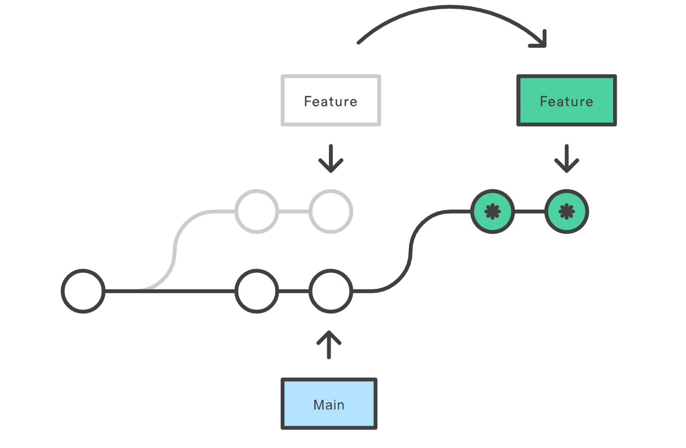

git status: Shows the current status of the working directory (modified, staged files, etc.). Example :
Saving changes a new file
1. Initialize a Git Repository (if not already done)
If your project isn't already a Git repository, navigate to your project directory and run:
git init
This command initializes a new Git repository in your current directory.
2. Create or Add a New File
Create a new file using your preferred text editor or the command line. For example, to create a new file named example.txt with some content:
git add example.txt
3. Check the Status of Your Repository
To see the current state of your repository and check for any untracked files, run:
git status
This command will display information about untracked files, changes not staged for commit, and changes to be committed.
4. Stage the New File
To add the new file to the staging area, use the git add command:
git add example.txt
This command stages the file, preparing it to be committed.
5. Commit the Staged File
Once the file is staged, commit it to the repository with a descriptive message:
git commit -m "Add example.txt file"
This command records the changes in the repository's history.
6. Push the Commit to a Remote Repository (Optional)
If you're working with a remote repository (e.g., on GitHub), push your commit to the remote server:
git push origin main
By following these steps, you can effectively save a new file in your Git repository.
Tags and Versioning
git tag <tag_name>: Adds a tag to mark a specific point in the history (e.g., for versioning). Example:
git tag v1.0.0
git push origin --tags: Pushes all tags to the remote repository. Example:
git push origin --tags
Undoing changes
git clean:
The git clean command is used to remove untracked files from your working directory. This is particularly useful when you have files that are not being tracked by Git and you want to clean up your working directory.
Usage:
Dry Run (Preview Files to Be Removed):
git clean -n
This command will list the files that would be removed without actually deleting them.
Remove Untracked Files:
git clean -f
This command will remove untracked files from your working directory.
Remove Untracked Files and Directories:
git clean -fd
This command will remove both untracked files and untracked directories.
Remove Ignored Files:
git clean -fX
This command will remove all ignored files. Be cautious with this option as it will delete files listed in your .gitignore.
Warning:git clean permanently deletes files. Use it cautiously, especially if there are untracked files you may want to keep.
git revert:
The git revert command is used to create a new commit that undoes the changes made by a previous commit. This is useful for undoing changes in a public history without rewriting the commit history.
Usage:
git revert <commit-hash>
Replace <commit-hash> with the hash of the commit you want to revert.
This command will create a new commit that undoes the changes introduced by the specified commit.
Example:
git revert a1b2c3d
This will revert the changes introduced by commit a1b2c3d.
git reset:
The git reset command is used to reset your current HEAD to a specified state. It has three primary modes:
Reset a specific commit
On the commit-level, resetting is a way to move the tip of a branch to a different commit. This can be used to remove commits from the current branch. For example, the following command moves the hotfix branch backwards by two commits.
git checkout hotfix git reset HEAD~2
The two commits that were on the end of hotfix are now dangling, or orphaned commits. This means they will be deleted the next time Git performs a garbage collection. In other words, you’re saying that you want to throw away these commits. This can be visualized as the following:
This usage of git reset is a simple way to undo changes that haven’t been shared with anyone else. It’s your go-to command when you’ve started working on a feature and find yourself thinking, “Oh crap, what am I doing? I should just start over.”
In addition to moving the current branch, you can also get git reset to alter the staged snapshot and/or the working directory by passing it one of the following flags:
Soft Reset (--soft): Moves HEAD to the specified commit and stages the changes.
git reset --soft <commit-hash>
Mixed Reset (--mixed): Moves HEAD to the specified commit and unstages the changes. This is the default mode.
git reset --mixed <commit-hash>
Hard Reset (--hard): Moves HEAD to the specified commit and resets the working directory and staging area to match. This discards all changes.
git reset --hard <commit-hash>
Warning:git reset --hard will discard all changes in your working directory and staging area. Use it with caution.
git reset --soft HEAD~1: Undoes the last commit but keeps the changes staged.
git reset --hard HEAD~1: Undoes the last commit and discards all changes.
git rm:
The git rm command is used to remove files from both your working directory and the staging area. This is useful when you want to delete a file from your repository.
Usage:
Remove a File:
git rm <file-name>
This command will remove the specified file from both the working directory and the staging area.
Remove a File from Staging Area Only:
git rm --cached <file-name>
This command will remove the specified file from the staging area but leave it in the working directory.
Undoing a git rm Operation:
Before Committing: If you haven't committed the removal yet, you can restore the file using:
git restore <file-name>
After Committing: If you've already committed the removal, you can revert the commit using:
git revert <commit-hash>
Replace <commit-hash> with the hash of the commit that removed the file.
Note: Always ensure you have backups or have committed your changes before using commands like git reset --hard or git clean -f, as they can permanently delete data.
Rewritting History
git rebase: Rebasing is the process of moving or combining a sequence of commits to a new base commit. Rebasing is most useful and easily visualized in the context of a feature branching workflow. The general process can be visualized as the following:

Don't rebase public history
You should never rebase commits once they've been pushed to a public repository. The rebase would replace the old commits with new ones and it would look like that part of your project history abruptly vanished.